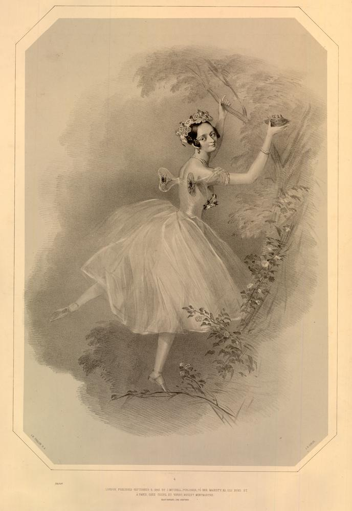

Foi uma das mais influentes bailarinas do século XIX e um verdadeiro ícone da era Romântica do Ballet. Nascida em 23 de abril de 1804, em Estocolmo, Suécia, ela era filha da bailarina suéca Sophie Karsten e do bailarino e coreógrafo italiano Filippo Taglioni, que teve um papel decisivo na formação de sua carreira e técnica.
Desde muito jovem, Marie foi treinada rigorosamente por seu pai, que adaptou os métodos de ensino ao seu físico, menos "forte" que o ideal da época. O resultado foi um estilo único: leveza, pureza de linha e uma elegância etérea que encantou o público europeu.
Marie Taglioni é amplamente reconhecida como a primeira bailarina a dançar na ponta dos pés com propósito artístico, e não apenas como truque técnico. Mas, embora Marie seja apontada muitas vezes por ser a primeira, as bailarinas Geneviève Gosselin e Evdokia Istomina, o fizeram primeiro na mesma época, mas foi Marie quem se tornou o grande símbolo por seu enorme sucesso em La Sylphide, coreografado por seu pai em 1832.
Nesse papel, ela interpretava uma criatura mágica do ar — a Sylphide — e sua dança nas pontas simbolizava exatamente isso: um ser leve, inalcançável e sobrenatural. A imagem de Taglioni dançando com delicadeza e graciosidade, quase flutuando, se tornou o ideal da bailarina romântica.
Símbolo do Ballet Romântico, durante sua carreira, Marie Taglioni se apresentou nos mais importantes teatros da Europa, incluindo a Ópera de Paris, onde foi estrela. Ela foi reverenciada não apenas por sua técnica, mas por sua expressividade contida, espiritualidade e estilo etéreo, que definiram o ideal da bailarina romântica.
Ela também dançou em outras obras marcantes, como:
Robert le Diable - coreografado por seu pai, Filippo Taglioni (na famosa “Dança das Freiras”)
La Gitana
La Fille du Danube
Taglioni se tornou Condessa de Voisins pois foi casada com o Conde Auguste Gilbert de Voisins.
Em 1837, Marie deixou a Opera de Paris para assumir um contrato em St. Petersburg no Mariinsky Ballet, também conhecido como o Ballet Kirov, onde ela permaneceria na maior parte do século XIX.
Perdeu todos os seus bens, incluindo sua fortuna, durante a guerra Franco-Prussiana (1870 a 1871), a partir disso, passou a dar aulas de dança para damas da sociedade e crianças, mas permaneceu pobre até o final de sua vida.
Marie Taglioni foi sem dúvida a bailarina mais famosa de sua época, se tornando uma celebridade de valor inestimável para o século XIX. Seu porte físico e suas qualidades artísticas como bailarina fizeram com que Marie Taglioni se tornasse uma lenda e fosse reconhecida até os dias atuais.
Sua influência permanece viva até hoje, tanto na técnica como na estética do Ballet Clássico.
Ela ajudou a moldar a imagem da bailarina como um ser quase sobrenatural, símbolo de leveza, virtude e arte pura. Sua figura inspirou pintores, escritores e músicos da época.
Marie Taglioni faleceu em Marselha, França, em 22 de abril de 1884, um dia antes de seu 80º aniversário, mas seu nome continua eternamente ligado à magia do Ballet.